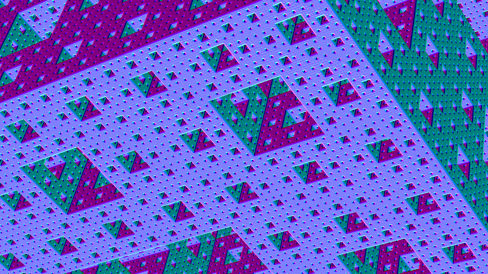
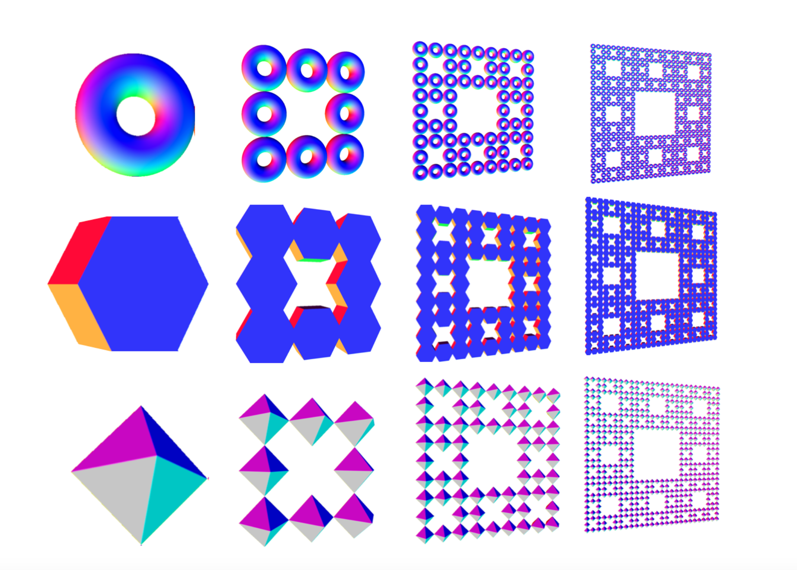
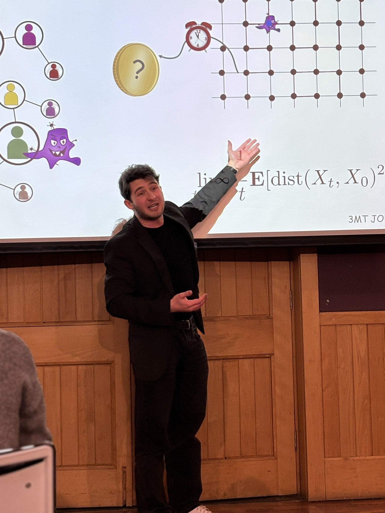

Media
Here are some interesting pictures that I’d like to share!

Description 1: Me giving a talk on the intersection between probability and fractals

Description 2: A cool fractal.

Description 3: Me in a waterfall

Description 4: An excellent demonstration of Banach's Fixed Point Theorem.

Description 5: Me participating in a three-minute thesis competition talking about Dynamical Percolation .
Description 6: A sunny day in London.